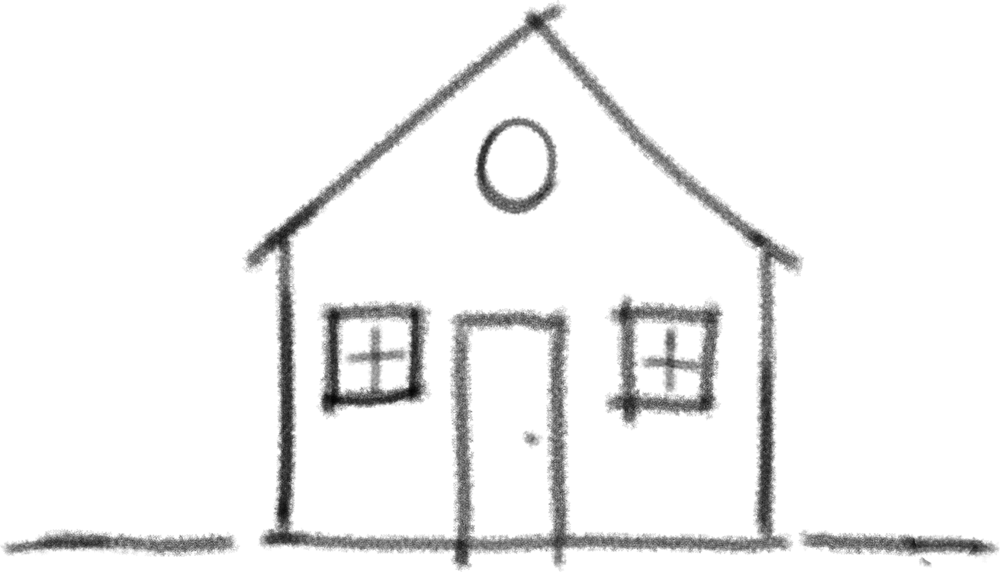
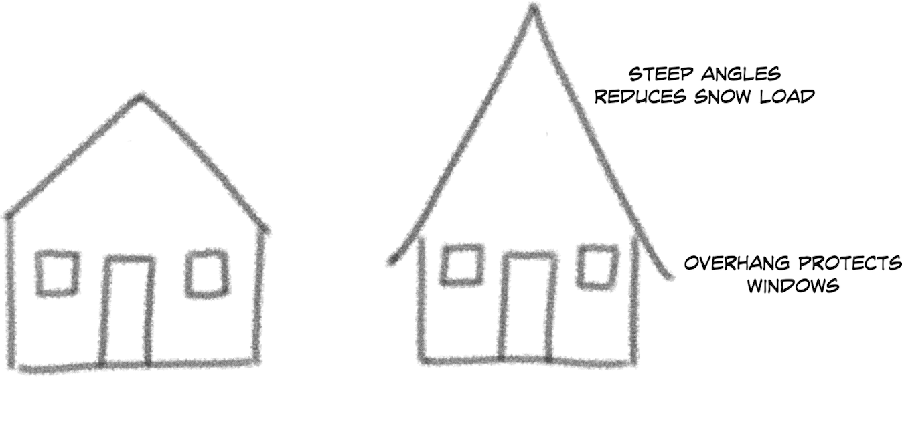
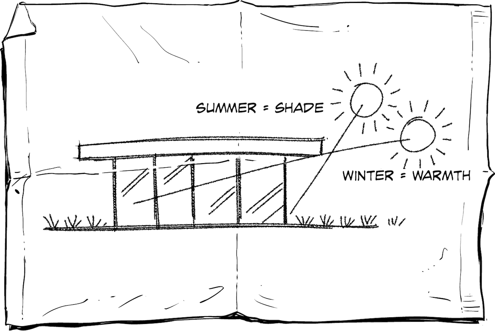

Look for Decisions!

Part of my job as chief architect is to review and approve system architectures. When I ask teams to show me “their architecture,” I frequently don’t consider what I receive to be an architecture document. Their counter-question of “what do you expect?” isn’t so easy for me to answer: despite many formal definitions, it isn’t immediately clear what architecture is or whether a document really depicts an architecture. Too often we have to fall back to the “I know it when I see it” test famously applied by a US Supreme Court judge to obscene material.1 We’d hope that identifying architecture is a more noble task than identifying obscene material, so let’s try a little harder. I am not a big believer in all-encompassing definitions but prefer to use lists of defining characteristics or tests that can be applied. One of my favorite tests for architecture documentation is whether it contains any nontrivial decisions and the rationale behind them.
So many attempts at defining software architecture have been made that the Software Engineering Institute (SEI) maintains a reference page of these definitions.
Among the most widely used is this definition from Garlan and Perry, from 1995:
The structure of the components of a system, their interrelationships, and principles and guidelines governing their design and evolution over time.
In 2000 the ANSI/IEEE Std 1471 chose the following definition (adopted as ISO/IEC 42010 in 2007):
The fundamental organization of a system, embodied in its components, their relationships to each other and the environment, and the principles governing its design and evolution.
The Open Group adopted a variation thereof for TOGAF:
The structure of the components, their interrelationships, and principles and guidelines governing their design and evolution over time.
One of my personal favorites is from Desmond D’Souza and Alan Cameron Wills’s book on the Catalysis method:2
The set of design decisions about any system that keeps its implementors and maintainers from exercising needless creativity.
The key point here isn’t that architecture should dampen all creativity, but needless creativity, of which I witness ample amounts. It also highlights the importance of making decisions (Chapter 6).
These well-thought-out definitions aren’t easy to work with, however, when someone walks up with a PowerPoint slide showing boxes and lines (Chapter 23), claiming, “This is my system architecture.” The first test I tend to apply is whether the documentation contains meaningful decisions. After all, if no decisions needed to be made, why employ an architect and prepare architectural documentation?
Martin Fowler’s knack for explaining the essence of things using extremely simple examples motivated me to illustrate the “architectural decision test” with the simplest example I could think of, drawing from the (admittedly limping) analogy to building architecture.
Consider the drawing of a house on the lefthand side in Figure 8-1. It has many of the elements required by the popular definitions of systems architecture: we see the main components of the system (door, windows, roof) and their interrelationships (door and windows in the wall, roof on the top). We might be a tad thin, though, on principles governing its design, but we do notice that we have a single door that reaches the ground and multiple windows, which follows common building principles.

Yet, to build such a house I wouldn’t want to pay an architect. This house is “cookie-cutter,” meaning I don’t see any nonobvious decisions that an architect would have made. Consequently, I wouldn’t consider this architecture.
Let’s compare this to the sketch on the right side of the figure. The sketch is equally simple, and the house is almost the same, except for the roof. This house has a steep roof and for a good reason: the house is designed for a cold climate where winters bring extensive snowfall. Snow is quite heavy and can easily overload the roof of the house. A steep roof allows the snow to slide off and be easily removed thanks to gravity, a pretty cheap and widely available resource. Additionally, an overhang prevents the sliding snow from piling up right in front of the windows.
To me, this is architecture: nontrivial decisions have been made and documented. The decisions are driven by the system context; in this case, the climate: it’s unlikely that the customer explicitly stated a requirement that the roof not be crushed by snowfall. Additionally, the documentation highlights relevant decisions and omits unnecessary noise.
If you believe these architectural decisions were pretty obvious, let’s look at a very different house in Figure 8-2.

This house in Figure 8-2 is quite different: the walls are made out of glass. While providing a stellar view, glass walls have the problem that the sun heats up the building, making it feel more like a greenhouse than a residence. The solution? Extending the roof well beyond the glass walls keeps the interior in the shade, especially in summer when the sun is high in the sky. In the winter, when the sun is low on the horizon, the sun reaches through the windows and helps warm the building interior. Again, the architecture is defined by a fairly simple but fundamental decision, documented in an easy-to-understand format that highlights the essence of the decision and the rationale behind it.
If you think the idea of building an overhanging roof isn’t all that original or significant, try buying one of the first homes to feature such a design; for example, the Case Study House No 22 in Los Angeles by architect Pierre Koenig. It’s easily in the league of most recognized residential building in Los Angeles or beyond (aided by Julius Shulman’s iconic photograph) and surely isn’t for sale. You can tour it, though, if you sign up far in advance. Significant architectural decisions may look obvious in hindsight, but that doesn’t diminish their value. No one is perfect, though: UCLA PhD students have measured that the overhang works better on the south-facing facade than west or east.3
The simple house example also highlights another important property of architecture: rarely is an architecture simply “good” or “bad.” Rather, architecture is fit or unfit for purpose. A house with glass walls and a flat roof might be regarded as great architecture, but probably not in the Swiss Alps where it will collapse after a few winters or suffer from a leaking roof. It also doesn’t do much good near the equator where the sun’s path on the sky remains fairly constant throughout the year. In those regions, you are better off with thick walls, small windows, and lots of air conditioning.
Architecture isn’t good or bad, it’s fit or unfit for a purpose.
Assessing the context and identifying implicit constraints or assumptions in proposed designs is an architect’s key responsibility. Architects are commonly described as the people dealing with nonfunctional requirements. I generally refer to hidden assumptions as nonrequirements—requirements that were never explicitly stated (Part I).
Even the dreaded Big Ball of Mud can be “fit for purpose”; for example, when you need to make a deadline at all costs and can’t care much about what happens afterward. This may not be the context you wish for, but just like houses in some regions have to be earthquake proof, some architectures have to be management proof.
Having stretched the overused building architecture analogy one more time, how do we translate it back to software systems architecture? Systems architecture doesn’t need to be something terribly complicated. It must include, however, significant decisions that are well documented and are based on a clear rationale. The word “significant” can be open to some interpretation and depend on the level of sophistication of the organization, but “we separate frontend from backend code” or “we use monitoring” surely have the ring of “my door reaches the ground so people can walk in” or “I put windows in the walls so light can enter.”
Instead, when discussing architectures, let’s talk about what isn’t obvious. For example, “do you use a service layer and why?” (some people may find even this obvious) or “why are you spreading your application across multiple cloud providers?” A good test is whether the chosen option also has downsides—decisions without downsides are unlikely to be meaningful.
All meaningful decisions have downsides.
It’s quite amazing how many “architecture documents” don’t pass this relatively simple test. I hope our set of house sketches provides a simple and nonthreatening way to provide feedback and to motivate architects to better document their designs and decisions.
1 Wikipedia, "Jacobellis v. Ohio,” Sept. 7, 2019, https://oreil.ly/EwvpU.
2 Desmond F. D’Souza and Alan Cameron Wills, Objects, Components, and Frameworks with UML: The Catalysis Approach (Boston: Addison-Wesley Professional, 1998).
3 P. La Roche, “The Case Study House Program in Los Angeles: A Case for Sustainability,” in Proc. of Conference on Passive and Low Energy Architecture (2002).